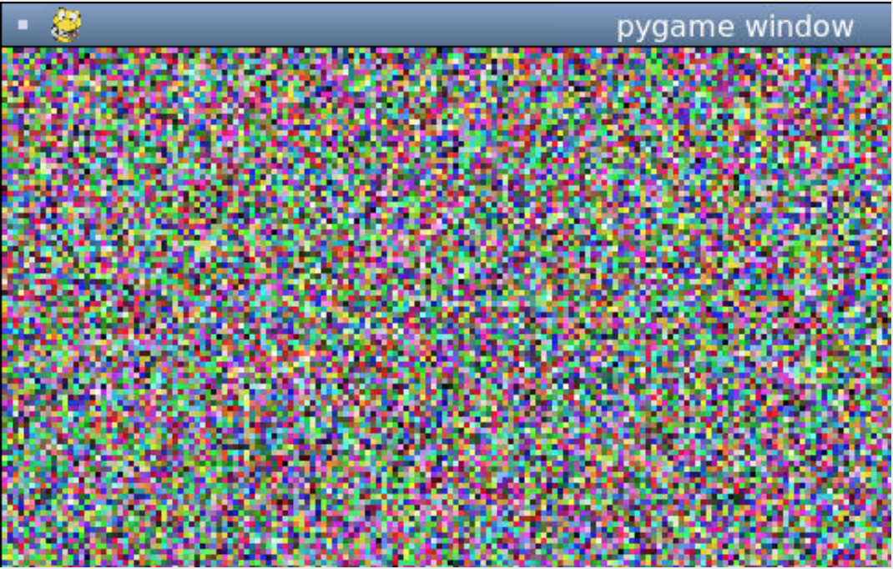

Randomness
Most of the times, we want our programs to be very predictable; to always give the same output when given the same inputs.
However, if we're writing programs to generate art, graphics, or entertainment, we might actually want variability from our programs, to delight users with different output each time. Randomness to the rescue!
Try out the program below to see what I mean:
import random
rand_num = random.randint(1, 10000)
rand_char = chr(rand_num)
print(rand_char)That program first imports the Python random module, which contains a bunch of functions for generating randomness. It then uses random.randint(start, end) to generate an integer between the start and end integers (inclusive of both the start and end). Finally, it calls the global function chr(int) to turn that number into a Unicode character. If you're curious, you can also print out the generated rand_num to see what the number was before it got turned into a character.
Using randomness inside functions
We sometimes write functions that can generate a random result, like a random color, a random x,y point, or even an entire shuffled deck of cards.
Try running the function below a few times:
def random_rgb():
r = random.randint(0, 255)
g = random.randint(0, 255)
b = random.randint(0, 255)
return [r, g, b]
random_rgb()I used the function above to make a randomized animated pixels demo. The code for that demo also relies on Pygame, a popular library for making games in Python.
A screenshot is below, but check out the link above to see the code and demo. The demo is hosted on Repl.it since Pygame doesn't work in the embedded code editor used in the articles.

Testing randomness
Before randomness, all of our functions were deterministic: for a given input, there's a predictable output.
Now, a given input (or no input at all) can result in very different results each time. That makes testing harder, since we can't test for exact outputs; we can only make sure the output is within some reasonable range.
Here's how we might write tests for that random color function:
def random_rgb():
"""Returns a list of random R, G, B color values.
>>> color = random_rgb()
>>> len(color) == 3
True
>>> color[0] >= 0 and color[0] <= 255
True
>>> color[1] >= 0 and color[1] <= 255
True
>>> color[2] >= 0 and color[2] <= 255
True
"""
r = random.randint(0, 255)
g = random.randint(0, 255)
b = random.randint(0, 255)
return [r, g, b]In Python at least, there is one other way of testing a function that relies on randomness. You can initialize the random number generator using a particular seed, and that seed will always result in the same sequence of random values. Typically, the seed is initialized based on the current system time, making output appear different each time, but we can set it to a constant number in our tests.
Once setting the seed, we can write a standard input/output test:
def random_rgb():
"""Returns a list of random R, G, B color values.
>>> random.seed(1)
>>> random_rgb()
[106, 184, 0]
"""
r = random.randint(0, 255)
g = random.randint(0, 255)
b = random.randint(0, 255)
return [r, g, b]Just make sure you don't set the seed in the function code itself, or you'll end up with very not-random output.
Random list items
Consider this list of random congratulations messages:
yays = ["You got it!", "Congrats!", "Well done!", "Nice one!"]The co:rise engineers might want to generate a random message each time a student gets a quiz answer correct.
One way to do that is to use the randint function from before, and use that to generate an index:
yays[random.randint(0, len(yays)-1)]And that would totally work! But this is such a common need that Python added a function just for this, random.choice(sequence).
Thanks to that function, the code can become much cleaner and concise:
random.choice(yays)Pseudo-randomness
Alright, now it's time for some real talk: none of this randomness is truly random. Sorry! The problem is, computers can't truly be random: they're built from logical circuits computing 0s and 1s, they don't know how to act on a whim.
Computers instead use pseudo-random number generators (PRNGs) which generate seemingly random numbers using a sequence of mathematical computations.
If for some reason a computer program needed truly random data, it would need to find a random process in nature and generate numbers based on that. The website random.org claims that it actually does generate random numbers by sampling atmospheric noise, and they go into great detail about their generation and attempts to prove the true randomness of the results. Fascinating!
Fortunately, the results of PRNGs are typically random enough to satisfy most use cases. Check out the program above which generates the numbers 1-3 a thousand times and measures the frequency of the results. Does it seem random enough for you?
import random
num_experiments = 10000
one_called = 0
two_called = 0
three_called = 0
for _ in range(num_experiments):
random_num = random.randint(1, 3)
if random_num == 1:
one_called += 1
elif random_num == 2:
two_called += 1
elif random_num == 3:
three_called += 1
def report_frequency(num, call_count, total_count):
percentage = call_count/total_count
print(f"{num} called {call_count} times: {percentage}")
report_frequency(1, one_called, num_experiments)
report_frequency(2, two_called, num_experiments)
report_frequency(3, three_called, num_experiments)